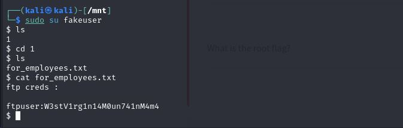
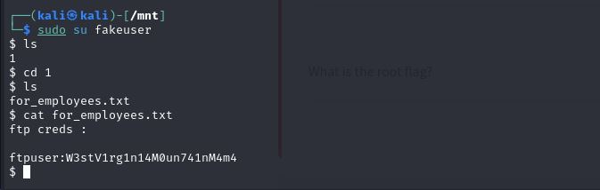
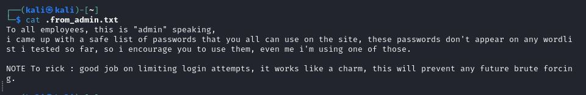
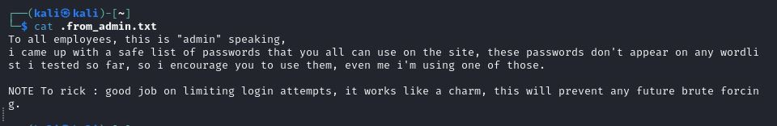
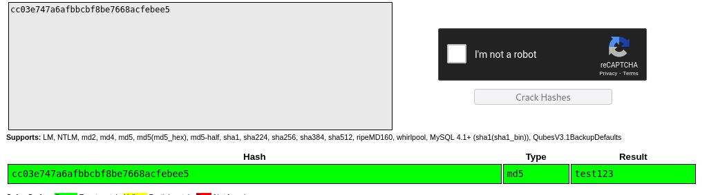
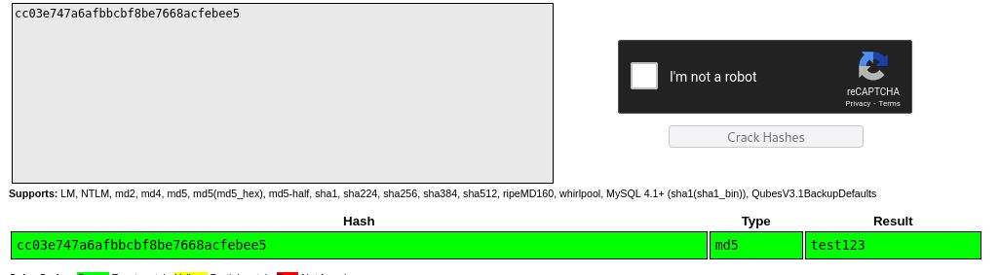

Tytuł
2024-04-29
content artykułu

Na początku jak zawsze zacząłem od rekonensanu bezpośrednio strony interentowej oraz narzędziem nmap gdzie skupiłem się na otawrtym porcie 2049

Po wyszukaniu w przęglądarce informacji na temat tego portu natrafiłem na artykuł na stronie HackTricks

Podożając za stroną dowiedizałem się że jest udostępniony folder do którego da się podłaczyć

Po utworzeniu użytkownika który byłby wstanie dostać się do zawartości foldera udało sie odczytać login i hasło do serwera ftp
 

Server ftp zawierał bardzo ciekawe informacje między innymi plik z dużą ilością haseł oraz notatkę od admina która sugerowała żeby uzywać tylko tych haseł o są ciężkie do złamania oraz to że sam używa jednego z tych haseł.
 

Po dokładnym przeglądnięciu servera FTP wróciłem do poszukiwań innych rzeczy na samej stronie interentowej. Po utworzeniu konta i zalogowaniu się na nie w narzędiu burp suite odrazu rzucało się w oczy ciasteczko z pewnym Session ID
Po przeanalizowaniu tego tokena w narzędziu CyberChef oraz CrackStation okazało się że owy token to po prostu login i hasło ukryte pod postacją base64 a samo hasło jeszcze jest zahaszowane za pomocą MD5
 
